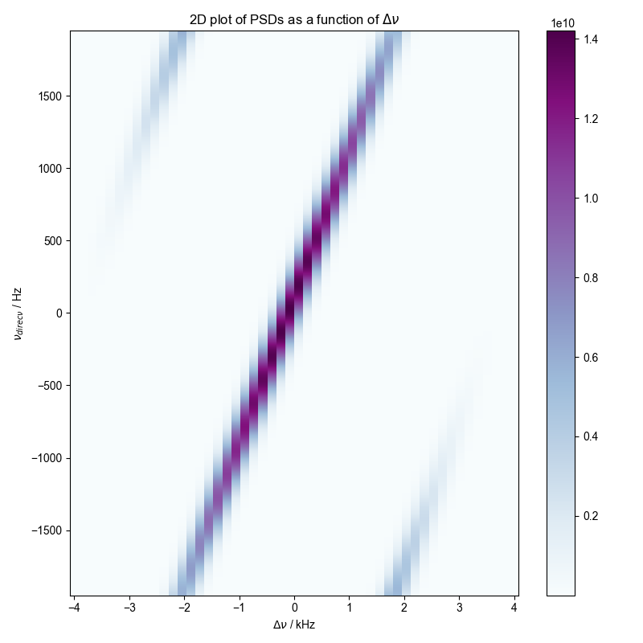
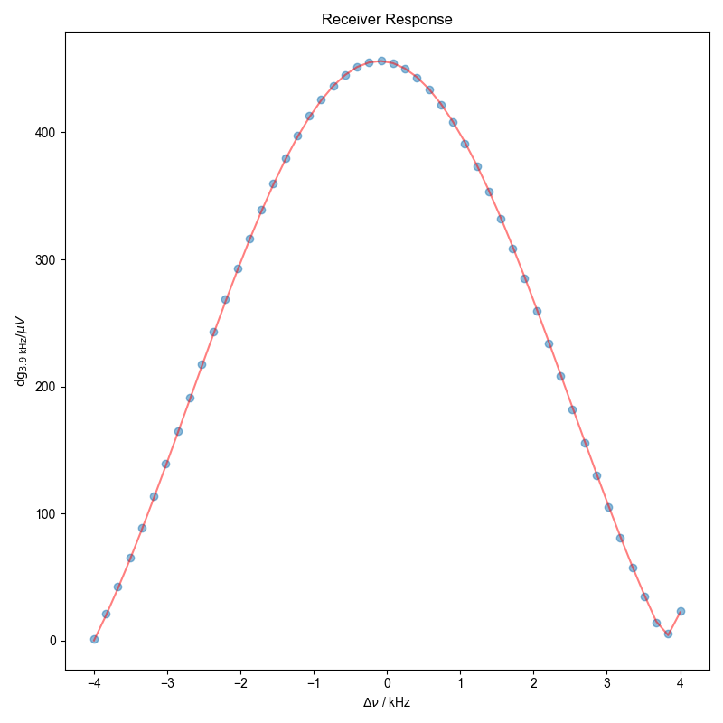

Note
Go to the end to download the full example code
Calculate and Fit Receiver Response to Sinc¶
Two files are required for the following example:
- file1
contains the analytic signal acquired on the (GW Instek GDS) oscilloscope directly captured from the rf source (GW Instek AFG). Each node pertains to signal with a different frequency (in kHz) which are fit to a complex function to extract the \(V_{p}\) (in μV).
- file2
contains the quadrature signal acquired on the receiver when the same signal of File1 is injected into it. Each node pertains to signal with a different frequency (in Hz) which are converted to a PSD. The amplitude (in dg) is calculated from the peak of the convolved PSD.
The receiver response is then the ratio of \(dg(\nu)\) to \(μV(\nu)\) which is fit to an absolute sinc function.
- 
- 
using return-list -- this should be deprecated in favor of stub loading soon!
using return-list -- this should be deprecated in favor of stub loading soon!
1: 2D plot
2: Receiver Response |||kHz
import numpy as np
import matplotlib.pyplot as plt
from numpy import r_, pi
import pyspecdata as psd
from sympy import symbols
import sympy as sp
import re
lambda_G = 0.4e3 # Width for Gaussian convolution
data_dir = "ODNP_NMR_comp/noise_tests"
file1 = "240123_10mV_AFG_GDS_5mV_100MSPS_analytic.h5"
file2 = "240117_afg_sc_10mV_3p9kHz_zoom.h5"
# {{{ various symbols/names used throughout
Dnu_name = r"$\Delta\nu$"
nu_direct_name = r"$\nu_{direct}$"
A, nu, phi, t, W, Dnu_symb = symbols("A nu phi t W " + Dnu_name, real=True)
# }}}
# {{{ Function to return the nodenames, and test signal frequencies
def get_freqs(thisfile):
"""Determine the nodenames of the file and put them in an ordered list.
From the list produce an array containing the ordered frequencies as
floats.
Parameters
==========
thisfile: str
Name of file that has nodes containing test signal at varying
frequencies.
Returns
=======
nodenames: list
List of strings of the nodenames sorted by the test signal frequency.
these_frqs: array
Array of sorted signal frequencies as integers
"""
frq_extract_fn = lambda x: float(x.split("_")[1])
nodenames = sorted(
psd.find_file(
re.escape(thisfile), exp_type=data_dir, return_list=True
),
key=frq_extract_fn,
)
these_frqs = np.array([frq_extract_fn(j) for j in nodenames])
return nodenames, these_frqs
# }}}
# {{{ set up empty nddata to store input V
control_nodenames, control_frqs = get_freqs(file1)
control_frqs *= 1e3 # kHz to Hz
control = (
psd.ndshape([len(control_frqs)], ["nu_test"])
.alloc()
.setaxis("nu_test", control_frqs)
.set_units("nu_test", "Hz")
)
# }}}
# {{{ Calculate input V (acquired on Oscilloscope)
for j, nodename in enumerate(control_nodenames):
d = psd.find_file(
file1,
expno=nodename,
exp_type=data_dir,
)
# {{{ fit signal in t domain to complex exponential
f = psd.lmfitdata(d)
f.functional_form = A * sp.exp(1j * 2 * pi * nu * t + 1j * phi)
f.set_guess(
A=dict(value=5e-3, min=1e-4, max=1),
nu=dict(
value=control["nu_test"][j],
min=control["nu_test"][j] - 1e4,
max=control["nu_test"][j] + 1e4,
),
phi=dict(value=0.75, min=-pi, max=pi),
)
f.fit()
# }}}
V_amp = f.output("A")
control["nu_test", j] = abs(V_amp) * 1e6 # μV
# {{{ make spline for power going into RX box
control.rename("nu_test", Dnu_name) # since we will be applying $\Delta\nu$
# axis to spline
control_spline = control.spline_lambda()
# }}}
# }}}
# {{{ Calculate dg
# Get nodenames and frequencies recorded on receiver
rec_nodenames, rec_frqs = get_freqs(file2)
with psd.figlist_var() as fl:
for j, nodename in enumerate(rec_nodenames):
d = psd.find_file(file2, exp_type=data_dir, expno=nodename)
if j == 0:
# Allocate an nddata with the same shape as a single frequency
# node but with an additional "nu_test" dimension so we can
# store all PSDs together for a 2D plot
rec_data = (
(d.shape + ("nu_test", len(rec_frqs)))
.alloc()
.setaxis("t", d.getaxis("t"))
.set_units("t", "s")
.setaxis("nu_test", rec_frqs)
.set_units("nu_test", "Hz")
)
carrier = (
d.get_prop("acq_params")["carrierFreq_MHz"] * 1e6
) # $\nu_{RX,LO}$
rec_data["nu_test", j] = d
SW = str(d.get_prop("acq_params")["SW_kHz"]) # For labeling final plot
rec_data.rename(
"nScans", "capture"
) # To be more consistent with the oscilloscope data rename the nScans
# dimension
acq_time = np.diff(rec_data["t"][r_[0, -1]]).item()
rec_data.run(np.conj) # Empirically needed to give offset that increases
# with field
# {{{ Calculate PSD for each frequency (we will calculate power from the A
# of the convolved test signal)
rec_data.ft("t", shift=True) # $dg\sqrt{s/Hz}$
rec_data = abs(rec_data) ** 2 # $dg^{2}*s/Hz$
rec_data.mean("capture")
rec_data /= acq_time # $dg^{2}/Hz$
# Convolve using $\lambda_{G}$ specified above
rec_data.convolve("t", lambda_G, enforce_causality=False)
# }}}
# {{{ center data at 0 MHz thus converting to
# $\Delta\nu$ rather than $\nu_{test}$
rec_data["nu_test"] -= carrier
rec_data.rename("nu_test", Dnu_name)
# }}}
# {{{ Plot 2D pcolor
rec_data.rename("t", nu_direct_name)
fig = plt.figure()
fl.next("2D plot", fig=fig)
the_2D = rec_data.C.run(np.real).pcolor(
cmap="BuPu", fig=fig, scale_independently=True
)
plt.title(r"2D plot of PSDs as a function of $\Delta\nu$")
# }}}
# {{{ Calculate power of test signal (Eq. S3)
rec_data.run(np.max, nu_direct_name) # Takes maximum of PSD
rec_data *= (lambda_G / (2 * np.sqrt(np.log(2)))) * np.sqrt(pi)
rec_data.run(np.sqrt) # dg
# }}}
# }}}
# {{{ Calculate receiver response as function of frequencies
# Make axis of $\Delta\nu$ that is evenly spaced and matches
# range of frequencies acquired on the receiver
Dnu = np.linspace(
(carrier) - (rec_data.getaxis(Dnu_name)[-1] / 2),
(carrier) + (rec_data.getaxis(Dnu_name)[-1] / 2),
len(rec_data.getaxis(Dnu_name)),
)
control = control_spline(Dnu) # Generate spline of input powers
dig_filter = rec_data / control # dg/μV
dig_filter.name(r"$\mathrm{dg_{%s\ \mathrm{kHz}}}/ \mu V$" % SW)
# }}}
# {{{ Fit receiver response
f = psd.lmfitdata(dig_filter)
# Fit to absolute sinc function
f.functional_form = A * abs(sp.sinc((2 * pi * (Dnu_symb - nu)) / W))
f.set_guess(
A=dict(value=400, min=1, max=9e3),
nu=dict(value=1, min=-100, max=100),
W=dict(value=9e3, min=3, max=1e4),
)
f.fit()
# }}}
fl.next("Receiver Response")
fl.plot(dig_filter, "o")
fl.plot(f.eval(), color="red", alpha=0.5)
Total running time of the script: (0 minutes 23.383 seconds)